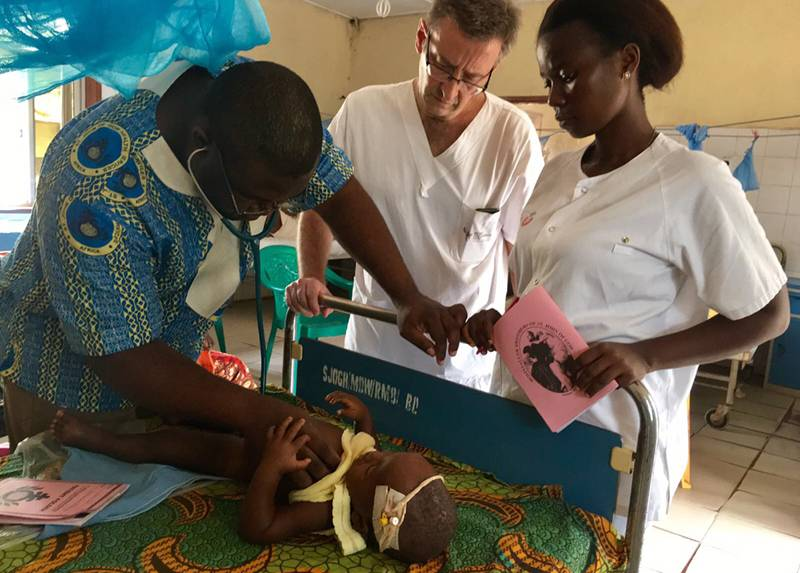
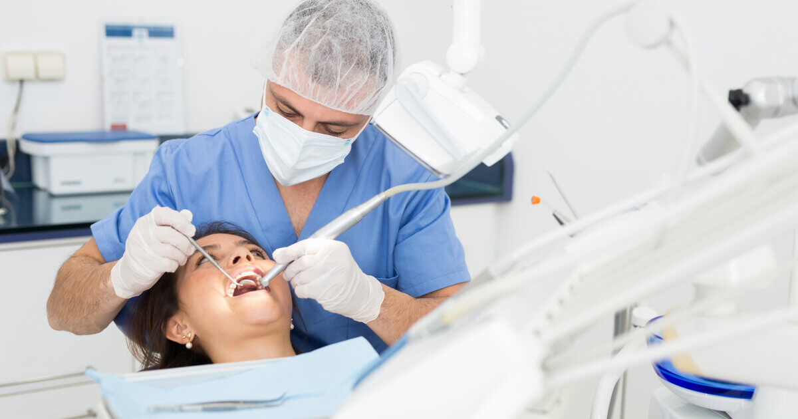
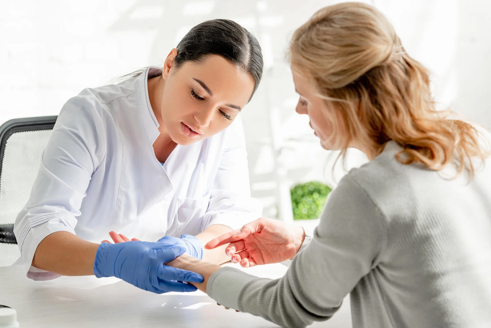
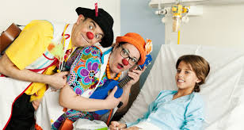
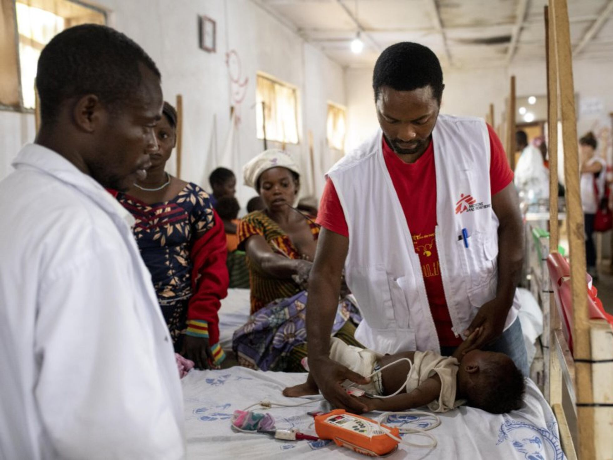
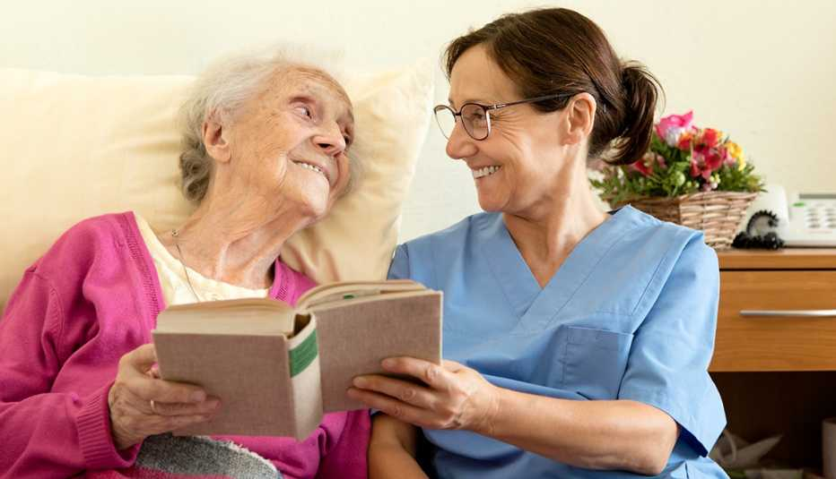
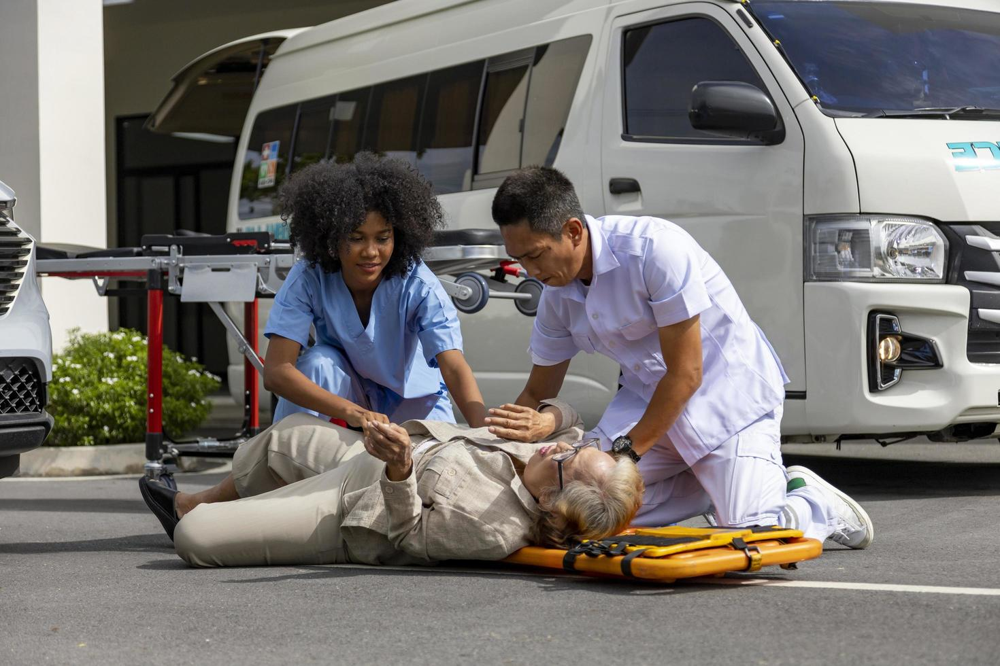
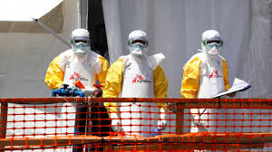
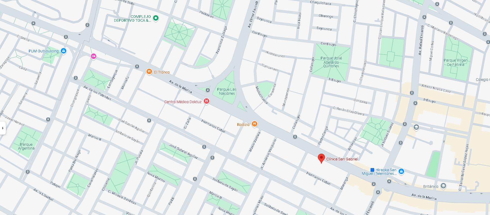

Somos Clinica Tu Salud, concientes de tu Salud
En la Clínica Tu Salud creemos que la salud se cuida con compromiso, respeto y calidez humana. Por eso, trabajamos cada día para brindar una atención médica integral, combinando tecnología moderna con un trato cercano y familiar. Nuestro equipo está conformado por profesionales altamente capacitados, dedicados a ofrecer un servicio de calidad que prioriza el bienestar de cada paciente. Más que una clínica, somos un espacio donde te escuchamos, te acompañamos y te cuidamos como parte de nuestra familia.
Mision
Brindar atención médica integral, humana y de calidad, comprometidos con el bienestar físico, emocional y social de nuestros pacientes. Nos esforzamos por ofrecer servicios de salud con calidez, tecnología moderna y un equipo profesional altamente capacitado, enfocados en la prevención, diagnóstico y tratamiento eficaz. Si me das más detalles sobre el tipo de servicios que ofrece tu clínica (por ejemplo, si es una clínica dental, estética, familiar, etc.), puedo personalizarla aún más.
Vision
Nuestra visión en la Clínica Del Priado es ser una institución médica reconocida a nivel regional y nacional por brindar una atención integral de calidad, con calidez humana, tecnología moderna y un equipo profesional comprometido con el bienestar de cada paciente. Aspiramos a crecer junto a nuestra comunidad, ampliando nuestros servicios y fortaleciendo la confianza de quienes nos eligen, siendo siempre un lugar donde la salud se atiende con responsabilidad, empatía y vocación.
Historia
Desde su fundación el 12 de abril de 2005, la Clínica Del Priado nació con el propósito de brindar atención médica accesible, cálida y profesional a nuestra comunidad. A lo largo de los años, hemos crecido no solo en infraestructura y servicios, sino también en compromiso con la salud y el bienestar de las familias que confían en nosotros. Nuestra visión es consolidarnos como una institución de referencia en el país, destacando por la calidad humana de nuestro equipo, la innovación tecnológica y el enfoque integral que ofrecemos a cada paciente. Miramos al futuro con la esperanza de seguir expandiéndonos, sin perder nunca el espíritu familiar y cercano que nos ha caracterizado desde el primer día.

8 de marzo de 2011 – Un día para recordar nuestro compromiso con la
vida
Ese día, en una pequeña sala del hospital comunitario, reafirmamos nuestra vocación de servicio.
Médicos, enfermeros y voluntarios unieron fuerzas para brindar atención a los más pequeños,
demostrando que cuando el corazón guía, no hay límites para ayudar.
Equipo
Contamos con un equipo de profesionales altamente capacitados y comprometidos con tu salud. Cada uno de nuestros médicos y especialistas está dedicado a brindarte la mejor atención posible, asegurando que recibas el tratamiento adecuado para tus necesidades.
Medicina general
Dr. Juan Pérez
Médico General con más de 10 años de experiencia en atención primaria y prevención de
enfermedades.
Su enfoque es brindar un cuidado integral a sus pacientes, priorizando su bienestar y salud.
Pediatria
Dr. Ana López
Pediatra especializada en el cuidado de la salud infantil. Su pasión es garantizar un
crecimiento y
desarrollo saludable para los más pequeños.
Ginecologia
Dr. María González
Ginecóloga con amplia experiencia en salud femenina. Se dedica a ofrecer atención integral y
personalizada a sus pacientes, priorizando su bienestar y salud.

Odontologia
Dr. Carlos Martínez
Odontólogo especializado en salud bucal. Su enfoque es brindar un cuidado integral a sus
pacientes,
priorizando su bienestar y salud.
Traumatologia
Dr. Laura Fernández
Traumatóloga con más de 15 años de experiencia en el diagnóstico y tratamiento de lesiones
musculoesqueléticas. Su enfoque es brindar un cuidado integral a sus pacientes, priorizando su
bienestar y salud.
Cardiologia
Dr. Javier Ramírez
Cardiólogo especializado en enfermedades cardiovasculares. Su enfoque es brindar un cuidado
integral a sus pacientes, priorizando su bienestar y salud.

Dermatologia
Dr. Patricia Torres
Dermatóloga con amplia experiencia en el diagnóstico y tratamiento de enfermedades de la piel.
Su
enfoque es brindar un cuidado integral a sus pacientes, priorizando su bienestar y salud.
Galería

Luchemos por los niños
Hay momentos en la medicina que trascienden los tratamientos y las batas blancas. Uno de ellos ocurre cuando un médico, más allá de su rol clínico, logra arrancar una sonrisa a un niño con cáncer. Esa risa, pura y valiente, se convierte en un acto de esperanza. Para el médico, ver a un pequeño paciente reír en medio de su lucha es un recordatorio de por qué eligió esta vocación: porque sanar no siempre es con fármacos, a veces es con humanidad, cercanía y alegría. Es en esos segundos de risa compartida donde la medicina cobra un nuevo sentido y el corazón del médico también sana.

Apoyo social a Guruanitos
En un acto de entrega y compromiso humano, un equipo de médicos voluntarios partirá este 15 de julio de 2025 rumbo a distintas comunidades rurales de África, como parte de la campaña “Misión Médica África 2025”, organizada por la ONG Vida Solidaria. Esta iniciativa busca brindar atención médica gratuita en zonas de extrema necesidad, donde el acceso a la salud es limitado. Médicos generales, pediatras, cirujanos, anestesiólogos y otros profesionales de la salud se unirán para ofrecer consultas, tratamientos, cirugías y educación sanitaria, llevando no solo conocimientos y medicinas, sino también esperanza y calidez humana a quienes más lo necesitan. Porque cuando la vocación trasciende fronteras, la medicina se convierte en un verdadero acto de amor.
Manos que curan, corazones que acompañan
En una pequeña sala de atención, una anciana es recibida con ternura por un equipo de médicos que no solo la examinan, sino que también la escuchan, la arropan y le brindan seguridad. Más allá de los estetoscopios y recetas, están las miradas comprensivas y las sonrisas que calman. Porque cuidar de nuestros adultos mayores es también reconocer la historia que llevan en sus manos y el valor que tienen en nuestras comunidades. En cada gesto, los médicos demuestran que la medicina también es acompañar, comprender y devolver la dignidad a quienes más lo necesitan.

Cuidar más allá de la medicina
En cada consulta, en cada tratamiento, los doctores se convierten en más que profesionales de la salud: se vuelven aliados en la lucha, voces de aliento en medio del miedo y manos firmes que sostienen cuando todo parece desmoronarse. Apoyar a personas con cáncer no es solo prescribir medicamentos, es estar presentes en cada etapa, desde el diagnóstico hasta la recuperación, compartiendo silencios, lágrimas y sonrisas. Es creer junto al paciente que la esperanza también cura. Porque en la batalla contra el cáncer, el acompañamiento humano es tan vital como cualquier terapia.

Respuesta inmediata, compromiso sin fronteras
En medio del caos y la angustia tras un accidente automovilístico, los médicos llegan con rapidez, decisión y humanidad. No solo brindan atención de emergencia, sino también palabras de calma y apoyo a los heridos y sus familias. Con manos firmes y corazones solidarios, estabilizan a los pacientes, controlan heridas y coordinan traslados seguros. Su presencia marca la diferencia entre la desesperación y la esperanza, recordándonos que la vocación médica no conoce horarios ni límites cuando se trata de salvar vidas.

Cuando la ciencia y la esperanza se encuentran
Después de años de estudio, pruebas y perseverancia, un grupo de médicos e investigadores logra lo impensable: descubrir la cura para una enfermedad que por años robó vidas y esperanza. Cada hallazgo, cada noche sin dormir, cada pequeño avance fue una muestra de entrega absoluta al bienestar humano. Hoy, ese esfuerzo se transforma en alivio para miles de pacientes y en un nuevo capítulo para la medicina. Porque detrás de cada descubrimiento hay un equipo que nunca dejó de creer, y una humanidad que siempre soñó con sanar.
Ubicación
Estamos ubicados en el corazón de la ciudad, lo que facilita tu acceso a nuestros servicios. Puedes encontrarnos en
📍 Av. Esperanza 1250, Urb. Nuevo Horizonte, Distrito Central, Lima 42, Perú.

Para más información, no dudes en contactarnos a través de nuestras redes sociales o llamando al 📞 123-456-7890. Estamos aquí para ayudarte.